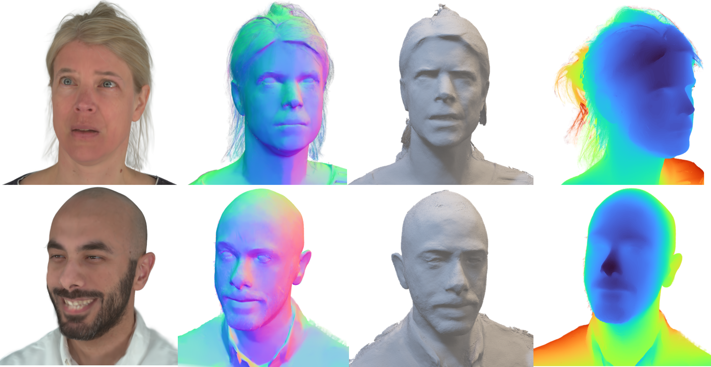
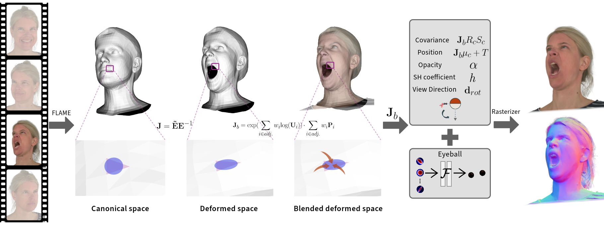

SurFhead: Affine Rig Blending for Geometrically Accurate 2D Gaussian Surfel-based Head Avatars
Anonymous Authors

SurFhead not only reconstructs photorealistic head avatars but also high-fidelity surface
normals, depth, and meshes from RGB videos alone. These avatars are represented through affine
rigging of 2D surfel splats bound to a parametric morphable face model. SurFhead allow us to fully
control poses, expressions, and viewpoints, enhancing the both appearance and geometry.
Recent advancements in head avatar rendering using Gaussian primitives have
achieved significantly high-fidelity results. Although precise head geometry is
crucial for applications like mesh reconstruction and relighting, current meth-
ods struggle to capture intricate geometric details and render unseen poses due
to their reliance on similarity transformations, which cannot handle stretch and
shear transforms essential for detailed deformations of geometry. To address this,
we propose SurFhead, a novel method that reconstructs riggable head geometry
from RGB videos using 2D Gaussian surfels, which offer well-defined geometric
properties, such as precise depth from fixed ray intersections and normals derived
from their surface orientation, making them advantageous over 3D counterparts.
SurFhead ensures high-fidelity rendering of both normals and images, even in ex-
treme poses, by leveraging classical mesh-based deformation transfer and affine
transformation interpolation. SurFhead introduces precise geometric deforma-
tion and blends surfels through polar decomposition of transformations, including
those affecting normals. Our key contribution lies in bridging classical graphics
techniques, such as mesh-based deformation, with modern Gaussian primitives,
achieving state-of-the-art geometry reconstruction and rendering quality. Unlike
previous avatar rendering approaches, SurFhead enables efficient reconstruction
driven by Gaussian primitives while preserving high-fidelity geometry.
Method overview

Overall pipeline of SurFhead. Only from RGB videos, SurFhead constructs geometrically
accurate head avatars, equipped with our intricate deformations. The Jacobian covers stretch
and shear deformations avoiding surface distortion. Moreover, the blended Jacobian alleviates
inherent local deformations’ discontinuity. Finally, elaborated modeling of eyeballs such as preser-
vation of specularity and convexity achieves more realistic appearance and geometry.